주택관리사보-1차 (2020-07-11 기출문제)
1과목: 민법
1. 관습법에 관한 설명으로 옳지 않은 것은? (다툼이 있으면 판례에 따름)
- 물권은 관습법에 의해서도 창설할 수 있다.
- 미등기 무허가건물의 양수인에게는 소유권에 준하는 관습상의 물권이 인정된다.
- 사실인 관습은 관습법과는 달리 법령의 효력이 없는 단순한 관행으로서 법률행위 당사자의 의사를 보충함에 그친다.
- 민사에 관하여 법률에 규정이 없으면 관습법에 의하고 관습법이 없으면 조리에 의한다.
- 관습법으로 승인되었던 관행이 그러한 관습법을 적용해야 할 시점에서의 전체 법질서에 부합하지 않게 되었다면, 그 관습법은 법적 규범으로서의 효력이 부정된다.
(정답률: 알수없음)

2. 신의성실의 원칙에 관한 설명으로 옳지 않은 것을 모두 고른 것은? (다툼이 있으면 판례에 따름)
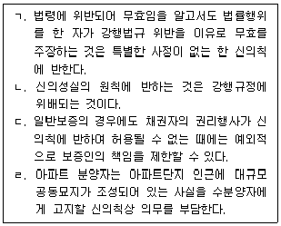
- ㄱ
- ㄷ
- ㄱ, ㄴ
- ㄴ, ㄷ
- ㄷ, ㄹ
(정답률: 알수없음)
3. 형성권이 아닌 것은?
- 취소권
- 상계권
- 채권자대위권
- 계약의 약정해지권
- 매매의 일방예약 완결권
(정답률: 알수없음)
4. 주소에 관한 설명으로 옳지 않은 것은?
- 주소는 동시에 두 곳 이상 있을 수 없다.
- 주소를 알 수 없으면 거소를 주소로 본다.
- 당사자는 특정한 행위에 관하여 가주소를 정할 수 있다.
- 법인의 주소는 그 주된 사무소의 소재지에 있는 것으로 한다.
- 국내에 주소가 없는 자에 대하여는 국내에 있는 거소를 주소로 본다.
(정답률: 알수없음)
5. 17세인 甲은 2020. 6. 10. 법정대리인 乙의 동의 및 처분허락 없이 자신의 노트북을 丙에게 50만원에 팔기로 하는 매매계약을 체결하였다. 이에 관한 설명으로 옳은 것은?
- 甲은 성년이 되기 전에는 매매계약을 취소할 수 없다.
- 乙은 甲이 성년이 되기 전에는 매매계약을 추인할 수 없다.
- 2020. 6. 20. 丙은 甲에게 매매계약에 대한 추인여부의 확답을 촉구할 수 있다.
- 丙이 매매계약 체결 당시에 甲이 미성년자임을 알았던 경우에는 乙에게 추인여부의 확답을 촉구할 수 없다.
- 丙이 매매계약 체결 당시에 甲이 미성년자임을 몰랐다면 추인이 잇기 전에 丙은 甲에 대하여도 철회의 의사표시를 할 수 있다.
(정답률: 알수없음)
6. 부재자에 관한 설명으로 옳지 않은 것은? (다툼이 있으면 판례에 따름)
- 법인은 부재자에 해당하지 않는다.
- 법원이 선임한 부재자의 재산관리인은 일종의 법정대리인이다.
- 법원에 의하여 재산관리인이 선임된 후에도 부재자는 스스로 재산관리임을 정할 수 있다.
- 재산관리인이 법원의 처분허가를 얻어 부재자의 재산을 처분한 후 그 허가결정이 취소된 경우, 처분행위는 소급하여 효력을 잃는다.
- 법원에 의하여 선임된 재산관리인이 있는 경우, 부재자 본인의 상대로 한 공시송달은 그 효력이 인정되지 않는다.
(정답률: 알수없음)
7. 민법상 법인의 이사에 관한 설명으로 옳은 것은? (다툼이 있으면 판례에 따름)
- 이사가 없거나 결원이 있는 경우에 이로 인하여 손해가 생길 염려 있는 때에는 법원은 특별대리인을 선임해야 한다.
- 이사가 여렷인 경우에는 정관에 다른 규정이 없으면 법인의 사무집행은 이사가 각자 결정한다.
- 정관에 이사의 해임사유에 관한 규정이 있는 경우, 특별한 사정이 없는 한 정관에서 정하지 아니한 사유로 이사를 해임할 수 없다.
- 법원의 직무집행정지 가처분결정으로 대표권이 정지된 대표이사가 그 정지기간 중에 체결한 계약은 후에 그 가처분신청이 취하되면 유효하게 된다.
- 법인의 이사회 결의에 무효 등 하자가 있는 경우, 법률에 별도의 규정이 없으므로 이해관계인은 그 무효를 주장할 수 없다.
(정답률: 알수없음)
8. 민법상 법인에 관한 설명으로 옳지 않은 것은? (다툼이 있으면 판례에 따름)
- 법인은 이사를 두어야 한다.
- 법인이 공익을 행하는 행위를 한 때에는 주무관청은 그 허가를 취소할 수 있다.
- 재단법인의 정관에 감사의 임면방법을 정하지 않아도 그 정관은 무효가 되지 않는다.
- 사단법인의 사원의 지위는 양도 또는 상속할 수 없다는 민법의 규정은 강행규정이 아니다.
- 사단법인의 정관은 자치법규이므로 해석 당시의 사원의 다수결에 의한 방법으로 자의적으로 해석될 수 있다.
(정답률: 알수없음)
9. 민법상 법인의 해산과 청산에 관한 설명으로 옳지 않은 것은? (다툼이 있으면 판례에 따름)
- 청산절차에 관한 규정은 강행규정이다.
- 법인의 해산 및 청산은 주무관청이 검사, 감독한다.
- 사단법인의 청산인은 필요하다고 인정한 때에는 임시총회를 소집할 수 있다.
- 청산 중의 법인은 변제기에 이르지 아니한 채권에 대하여도 변제할 수 있다.
- 법인에 대한 청산종결등기가 마쳐졌더라도 청산사무가 종결되지 않는 범위 내에서는 청산법인으로서 존속한다.
(정답률: 알수없음)
10. 법인 아닌 사단에 관한 설명으로 옳지 않은 것은? (다툼이 있으면 판례에 따름)
- 법인 아닌 사단이 소유하는 물건은 사원의 총유에 속한다.
- 법인 아닌 사단에 대하여는 사단법인에 관한 민법규정 중 법인격을 전제로 하는 것을 제외한 규정을 유추적용한다.
- 종중이 법인 아닌 사단이 되기 위해서는 특별한 조직행위에 이를 규율하는 성문의 규약이 있어야 한다.
- 교회가 그 실체를 갖추어 법인 아닌 사단으로 성립한 후 교회의 대표자가 교회를 위하여 취득한 권리의무는 교회에 귀속된다.
- 사단법인의 하부조직이라도 스스로 단체로서의 실체를 갖추고 독자적인 활동을 하고 있다면 사단법인과 별개의 독립된 법인 아닌 사단이 될 수 있다.
(정답률: 알수없음)
11. 물건에 관한 설명으로 옳지 않은 것은? (다툼이 있으면 판례에 따름)
- 부동산의 일부는 용익물권의 객체가 될 수 있다.
- 사람의 유체·유골은 매장·제사·공양의 대상이 될 수 있는 유체물이다.
- 토지의 소유권은 정당한 이익이 있는 범위 내에서 토지의 상하에 미친다.
- 최소한의 기둥과 지붕 그리고 주벽이 이루어지면 사회통념상 독립한 건물로 인정될 수 있다.
- 건물의 신축공사를 도급받은 수급인이 사회통념상 독립한 건물이라고 볼 수 없는 정착물을 토지에 설치한 상태에서 공사가 중단된 경우, 그 정착물은 토지의 종물이 된다.
(정답률: 알수없음)
12. 주물과 종물에 관한 설명으로 옳지 않은 것은? (다툼이 있으면 판례에 따름)
- 주물 그 자체의 효용과 직접 관계가 없는 물건은 종물이 아니다.
- 원본채권이 양도되면 특별한 사정이 없는 한 이미 변제기에 도달한 이자채권도 함께 양도된다.
- 당사자가 주물을 처분하는 경우, 특약으로 종물을 제외할 수 있고 종물만을 별도로 처분할 수도 있다.
- 저당부동산의 상용에 이바지하는 물건이 다른 사람의 소유에 속하는 경우, 그 물건에는 원칙적으로 부동산에 대한 저당권의 효력이 미치지 않는다.
- 토지임차인 소유의 건물에 대한 저당권이 실행되어 매수인이 그 소유권을 취득한 경우, 특별한 사정이 없는 한 건물의 소유를 목적으로 한 토지임차권도 건물의 소유권과 함께 매수인에게 이전된다.
(정답률: 알수없음)
13. 반사회질서의 법률행위로 무효인 것은? (다툼이 있으면 판례에 따름)
- 양도소득세 회피 목적의 미등기 전매계약
- 부첩관계인 부부생활의 종료를 해제조건으로 하는 증여계약
- 매매계약에서 매도인에게 부과될 공과금을 매수인이 책임진다는 취지의 특약
- 강제집행을 면할 목적으로 자신의 아파트에 허위의 근저당권설정등기를 마치는 행위
- 도박채무의 변제를 위하여 채무자로부터 부동산의 처분을 위임받은 도박채권자가 이를 모르는 제3자와 체결한 매매계약
(정답률: 알수없음)
14. 불공정한 법률행위에 관한 설명으로 옳은 것을 모두 고른 것은? (다툼이 있으면 판례에 따름)
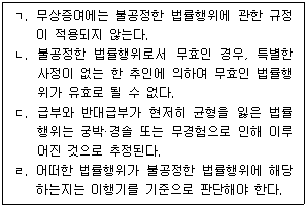
- ㄱ, ㄴ
- ㄱ, ㄷ
- ㄴ, ㄹ
- ㄱ, ㄷ, ㄹ
- ㄴ, ㄷ, ㄹ
(정답률: 알수없음)
15. 甲은 乙의 부동산을 매수하였는데 계약 내용의 중요부분에 착오가 있어 이를 이유로 매매계약을 취소하고자 한다. 이에 관한 설명으로 옳은 것은? (다툼이 있으면 판례에 따름)
- 하자담보책임과 착오의 요건을 갖춘 경우, 甲은 하자담보책임을 물을 수 있을 뿐 착오를 이유로 매매계약을 취소할 수는 없다.
- 甲의 매매계약 취소가 인정되기 위해서는 甲은 자신에게 중대한 과실이 없었음을 주장·증명해야 한다.
- 乙이 甲의 채무불이행을 이유로 매매계약을 적법하게 해제한 경우, 甲은 자신에게 중대한 과실이 없어도 취소권을 행사할 수 없다.
- 경과실로 인해 착오에 빠진 甲이 매매계약을 취소한 경우, 乙은 甲에게 불법행위책임을 물을 수 있다.
- 甲은 계약 내용에 착오가 있었다는 사실과 함께 만일 그 착오가 없었더라면 의사표시를 하지 않았을 것이라는 점도 증명해야 한다.
(정답률: 알수없음)
16. 甲은 자신의 X토지를 매도할 것을 미성년자 乙에게 위임하고 대리권을 수여하였다. 乙은 甲을 대리하여 丙과 X토지를 매매계약을 체결하였는데, 계약체결 당시 丙의 위법한 기망행위가 있었다. 이에 관한 설명으로 옳은 것은? (다툼이 있으면 판례에 따름)
- 乙이 사기를 당했는지 여부를 甲을 표준으로 하여 결정한다.
- 甲이 아니라 乙이 사기를 이유로 丙과의 매매계약을 취소할 수 있다.
- 甲은 乙이 제한능력자라는 이유로 乙이 체결한 매매계약을 취소할 수 없다.
- 甲은 특별한 사정이 없는 한 乙과의 위임계약을 일방적으로 해지할 수 없다.
- 乙이 丙의 사기에 의해 착오를 일으켜 계약을 체결한 경우, 착오에 관한 법리는 적용되지 않고 사기에 관한 법리만 적용된다.
(정답률: 알수없음)
17. 의사표시에 효력발생에 관한 설명으로 옳은 것은? (다툼이 있으면 판례에 따름)
- 의사표시자가 그 통지를 발송한 후 제한능력자가 된 경우, 그 의사표시는 효력이 없다.
- 보통우편의 방법으로 발송되었다는 사실만으로 그 우편물은 상당기간 내에 도달한 것으로 추정된다.
- 의사표시가 상대방에게 도달하더라도 상대방이 그 내용을 알기 전에는 그 효력이 발생하지 않는다.
- 의사표시의 상대방이 의사표시를 받은 때에 피특정후견인인 경우에는 의사표시자는 그 의사표시로써 대항할 수 있다.
- 이사의 사임 의사표시가 법인의 대표자에게 도달한 때에는 정관에 따라 사임의 효력이 발생하지 않았더라도 그 사임의사를 철회할 수 없다.
(정답률: 알수없음)
18. 대리에 관한 설명으로 옳지 않은 것은? (다툼이 있으면 판례에 따름)
- 임의대리권은 원인된 법률관계의 종료에 의하여 소멸한다.
- 대리인은 본인의 허락이 없어도 쌍방을 대리하여 다툼이 없는 채무의 이행을 할 수 있다.
- 복대리인이 그 권한 내에서 본인을 위한 것임을 표시한 의사표시는 직접 본인에게 효력이 생긴다.
- 법률행위에 의해 대리권을 부여받은 대리인은 특별한 사정이 없는 한 복대리인을 선임할 수 있다.
- 매매계약의 체결과 이행에 관한 포괄적 대리권을 수여받은 대리인은 특별한 사정이 없는 한 약정된 매매대금 지급기일을 연기해 줄 권한도 가진다.
(정답률: 알수없음)
19. 표현대리에 관한 설명으로 옳지 않은 것은? (다툼이 있으면 판례에 따름)
- 대리권수여의 표시에 의한 표현대리가 성립하기 위해서는 대리권이 없다는 사실에 대해 상대방은 선의·무과실이어야 한다.
- 사실혼 관계에 있는 부부간에도 일상가사에 관한 대리권이 인정되므로, 이를 기본대리권으로 하는 권한을 넘은 표현대리가 성립할 수 있다.
- 대리인이 사자(使者)를 통해 권한 외의 대리행위를 한 경우, 그 사자에게는 기본대리권이 없으므로 권한을 넘은 표현대리가 성립할 수 없다.
- 권한을 넘은 표현대리의 경우, 권한이 있다고 믿을 만한 정당한 이유가 있는지 여부는 대리행위 당시를 기준으로 해야 한다.
- 대리인이 대리권 소멸 후 복대리인을 선임하여 복대리인으로 하여금 상대방의 대리행위를 하도록 한 경우에도 대리권 소멸 후의 표현대리가 성립할 수 있다.
(정답률: 알수없음)
20. 협의의 무권대리에 관한 설명으로 옳지 않은 것은? (다툼이 있으면 판례에 따름)
- 무권대리행위의 추인은 원칙적으로 의사표시의 전부에 대하여 해야 한다.
- 무권대리행위에 대한 본인의 추인 또는 추인거절이 없는 경우, 상대방은 최고권을 행사할 수 있다.
- 추인의 상대방은 무권대리행위의 직접 상대방뿐만 아니라 그 무권대리행위로 인한 권리의 승계인도 포함한다.
- 무권대리행위가 제3자가의 기망 등 위법행위로 야기된 경우, 무권대리인의 상대방에 대한 책임은 부정된다.
- 무권대리행위의 내용을 변경하여 추인한 경우, 상대방의 동의를 얻지 못하면 그 추인은 효력이 없다.
(정답률: 알수없음)
21. 무효와 취소에 관한 설명으로 옳지 않은 것은? (다툼이 있으면 판례에 따름)
- 취소할 수 있는 법률행위는 취수권을 행사하지 않더라도 처음부터 무효이다.
- 취소할 수 있는 법률행위의 상대방이 확정된 경우, 취소는 그 상대방에 대한 의사표시로 해야 한다.
- 제한능력자가 제한능력을 이유로 법률행위를 취소한 경우, 그는 법률행위로 인하여 받은 이익이 현존하는 한도에서 상환할 책임이 있다.
- 무효인 가등기를 유효한 등기로 전용하기로 한 약정은 그때부터 유효하고, 이로써 가등기가 소급하여 유효한 등기로 전환되지 않는다.
- 무효인 법률행위에 따른 법률효과를 침해하는 것처럼 보이는 위법행위가 있다고 하여도 법률효과의 침해에 따른 손해는 없으므로 그 배상을 청구할 수 없다.
(정답률: 알수없음)
22. 기간의 만료점이 빠른 시간 순서대로 나열한 것은? (다툼이 있으면 판례에 따름)
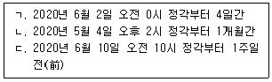
- ㄱ – ㄴ - ㄷ
- ㄱ – ㄷ - ㄴ
- ㄴ – ㄱ - ㄷ
- ㄴ – ㄷ - ㄱ
- ㄷ – ㄴ - ㄱ
(정답률: 알수없음)
23. 소멸시효의 중단에 관한 설명으로 옳지 않은 것은? (다툼이 있으면 판례에 따름)
- 재판상 청구는 그 소가 각하되더라도 최고의 효력은 있다.
- 응소행위로 인한 시효중단의 효력은 원고가 소를 제기한 때에 발생한다.
- 소멸시효가 중단되면 중단사유가 종료된 때부터 새로 시효가 진행한다.
- 시효중단의 효력 있는 승인에는 상대방의 권리에 관한 처분의 능력이나 권한 있음을 요하지 않는다.
- 부진정연대채무자 1인에 대한 이행의 청구는 다른 부진정연대채무자에 대하여 시효중단의 효력이 없다.
(정답률: 알수없음)
24. 소멸시효에 걸리는 권리는? (다툼이 있으면 판례에 따름)
- 점유권
- 유치권
- 주위토지통행권
- 소유권에 기한 방해제거청구권
- 물상보증인의 채무자에 대한 구상권
(정답률: 알수없음)
25. 등기의 추정력이 깨지는 경우를 모두 고른 것은? (다툼이 있으면 판례에 따름)
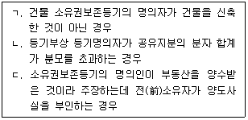
- ㄱ
- ㄴ
- ㄱ, ㄷ
- ㄴ, ㄷ
- ㄱ, ㄴ, ㄷ
(정답률: 알수없음)
26. 부동산물권의 변동에 관한 설명으로 옳은 것은? (다툼이 있으면 판례에 따름)
- 등기는 물권의 효력존속요건이다.
- 무효등기의 유용에 관한 합의는 묵시적으로 이루어질 수 없다.
- 토지거래허가구역 내의 토지에 대해 행하여진 중간생략등기는 무효이다.
- 상속에 의한 토지소유권 취득은 등기해야 그 효력이 생긴다.
- 미등기건물의 원시취득자가 그 승계취득자 사이의 합의에 의하여 직접 승계취득자 명의로 소유권보존등기를 한 경우, 그 등기는 무효이다.
(정답률: 알수없음)
27. 공동소유를 관한 설명으로 옳지 않은 것은? (다툼이 있으면 판례에 따름)
- 합유자는 합유물의 분할을 청구하지 못한다.
- 합유는 조합체의 해산 또는 합유물의 양도로 인하여 종료한다.
- 총유물의 관리는 특별한 사정이 없는 한 사원 각자 할 수 있다.
- 공유자의 지분은 특별한 사정이 없는 한 균등한 것으로 추정한다.
- 공유자는 다른 공유자의 동의 없이 공유물을 처분하거나 변경하지 못한다.
(정답률: 알수없음)
28. 전세권에 관한 설명으로 옳은 것은? (다툼이 있으면 판례에 따름)
- 전세목적물의 인도는 전세권의 성립요소이다.
- 전세권설정자가 부속물매수청구권을 행사한 때에도 전세권자는 원칙적으로 부속물을 수거할 수 있다.
- 전세권자가 목적물의 통상적인 유지 및 관리를 위하여 비용을 지출한 경우, 그 필요비의 상환을 청구할 수 있다.
- 전세권을 목적으로 한 저당권이 설정된 경우, 전세권의 존속기간이 만료되면 전세권 자체에 대하여 저당권을 실행할 수 없다.
- 당사자는 설정행위로 전세권의 양도나 전세목적물의 임대를 금지하는 약정을 할 수 있다.
(정답률: 알수없음)
29. 유치권에 관한 설명으로 옳지 않은 것은?
- 유치권은 점유의 상실로 인하여 소멸한다.
- 유치권자는 채권의 변제를 받기 위하여 유치물을 경매할 수 없다.
- 유치권의 행사는 채권의 소멸시효의 진행에 영향을 미치지 않는다.
- 채무자는 상당한 담보를 제공하고 유치권의 소멸을 청구할 수 있다.
- 유치권자가 유치물에 관하여 필요비를 지출한 때에는 소유자에게 그 상환을 청구할 수 있다.
(정답률: 알수없음)
30. 甲은 X토지와 그 지상에 Y건물을 소유하고 있으며, 그 중에서 Y건물을 乙에게 매도하고 乙명의로 소유권이전등기를 마쳐주었다. 그 후 丙은 乙의 채권자가 신청한 강제경매에 의해 Y건물의 소유권을 취득하였다. 乙과 丙의 각 소유권취득에는 건물을 철거한다는 등의 조건이 없다. 이에 관한 설명으로 옳지 않은 것은? (다툼이 있으면 판례에 따름)
- 丙은 등기 없이 甲에게 관습상 법정지상권을 주장할 수 있다.
- 甲은 丙에 대하여 Y건물의 철거 및 X토지의 인도를 청구할 수 없다.
- 丙은 Y건물을 개축한 때에도 甲에게 관습상 법정지상권을 주장할 수 있다.
- 甲은 법정지상권에 관한 자료가 결정되지 않았더라도 乙이나 丙의 2년 이상의 지료지급 지체를 이유로 지상권소멸을 청구할 수 있다.
- 만일 丙이 관습상 법정지상권을 등기하지 않고 Y건물만을 丁에게 양도한 경우, 丁은 甲에게 관습상 법정지상권을 주장할 수 없다.
(정답률: 알수없음)
31. 저당권에 관한 설명으로 옳지 않은 것은? (다툼이 있으면 판례에 따름)
- 저당권의 효력은 원칙적으로 저당부동산에 부합된 물건과 종물에 미친다.
- 물상보증인은 수탁보증인과 마찬가지로 원치적으로 채무자에게 사전구상권을 행사할 수 있다.
- 저당권의 효력은 저당부동산에 대한 압류 이후의 저당권설정자의 저당부동산에 관한 차임채권에도 미친다.
- 저당부동산에 대하여 전세권을 취득한 제3자는 저당권자에게 그 부동상늘 담보된 채권을 변제하고 저당권의 소멸을 청구할 수 있다.
- 저당권은 그 담보한 채권과 분리하여 타인에게 양도하거나 다른 채권의 담보로 하지 못한다.
(정답률: 알수없음)
32. 甲이 5,000만원의 채권을 담보하기 위해, 채무자 乙소유의 X부동산과 물상보증인 丙소유의 Y부동산에 각각 1번 저당권을 취득하였다. 그 후 丁이 4,000만원의 채권으로 X부동산에, 戊가 3,000만원의 채권으로 Y부동산에 각각 2번 저당권을 취득하였다. 甲이 X부동산과 Y부당산에 대하여 담보권실행을 위한 경매를 신청하여 X부동산은 6,000만원, Y부동산은 4,000만원에 매각되어 동시에 배당하는 경우, 이자 및 경매비용 등을 고려하지 않는다면 甲이 Y부동산의 매각대금에서 배당받을 수 있는 금액은? (다툼이 있으면 판례에 따름)
- 0원
- 1,000만원
- 2,000만원
- 3,000만원
- 4,000만원
(정답률: 알수없음)
33. 쌍무계약상 채무이행이 불능인 경우에 관한 설명으로 옳지 않은 것은?
- 계약이 원시적·객관적 전부불능인 경우, 그 계약은 무효이다.
- 채무자의 책임 있는 사유로 후발적 이행불능이 된 경우, 채권자는 최고 없이 계약을 해제할 수 있다.
- 채무자의 책임 있는 사유로 후발적 불능이 발생한 경우, 채권자는 그로 인해 발생한 손해의 배상을 청구할 수 있다.
- 채권자의 수령지체 중에 당사자 쌍방의 책임 없는 사유로 채무자의 이행이 불능이 된 경우, 채무자는 채권자에게 이행을 청구할 수 있다.
- 채권자가 이행불능을 이유로 계약을 해제한 경우, 그는 이행불능으로 인한 손해의 배상을 청구할 수 없다.
(정답률: 알수없음)
34. 채권자대위권에 관한 설명으로 옳은 것은? (다툼이 있으면 판례에 따름)
- 채권자는 자신의 채권을 보전하기 위하여 채무자의 제3자에 대한 채권자취소권을 대위행사할 수 없다.
- 이혼으로 인한 재산분할청구권은 그 구체적 내용이 심판에 의해 명확하게 확정되었더라도 피보전채권이 될 수 없다.
- 채무자가 자신의 제3채무자에 대한 권리를 이미 재판상 행사하였더라도 채권자는 그 권리를 대위행사할 수 있다.
- 채권자는 피보전채권의 이행기가 도래하기 전이라도 피대위채권의 시효중단을 위해서 채무자를 대위하여 제3채무자에게 이행청구를 할 수 있다.
- 채권자가 채무자에 대한 소유권이전등기청구궝늘 보전하기 위하여 채무자의 제3자에 대한 소유권이전등기청구권을 대위행사하는 경우에도 채무자의 무자력을 그 요건으로 한다.
(정답률: 알수없음)
35. 2020. 3. 2. 甲은 乙에게 자신의 X토지를 1억 원에 매도하겠다는 뜻과 함께 승낙기간을 2020. 3. 10.로 정한 내용의 서면을 발송하였고, 위 서면이 2020. 3. 4. 乙에게 도달하였다. 이에 관한 설명으로 옳은 것은?
- 甲은 2020. 3. 10. 오전 0시에 청약을 원칙적으로 철회할 수 없다.
- 乙이 발송한 승낙통지가 2020. 3. 9. 甲에게 도달한 경우, 계약은 2020. 3. 10.에 성립한다.
- 乙이 2020. 3. 12. 계약내용에 변경을 가하여 승낙한 경우, 甲이 이를 곧바로 승낙하여도 계약은 성립하지 않는다.
- 乙이 2020. 3. 9. 발송한 승낙통지가 2020. 3. 11. 甲에게 도달한 경우, 甲이 이를 곧바로 승낙하여도 계약은 성립하지 않는다.
- 만일 乙이 甲에게 X토지를 2020. 3. 3. 1억 원에 매수하겠다는 서면을 발송하여 2020. 3. 6. 도달하였다면 계약은 2020. 3. 4. 성립한다.
(정답률: 알수없음)
36. 동시이행의 관계에 있는 것을 모두 고른 것은? (다툼이 있으면 판례에 따름)
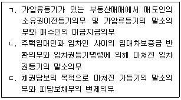
- ㄱ
- ㄷ
- ㄱ, ㄴ
- ㄴ, ㄷ
- ㄱ, ㄴ, ㄷ
(정답률: 알수없음)
37. 계약금에 관한 설명으로 옳은 것은? (다툼이 있으면 판례에 따름)
- 계약금계약은 하나의 독립한 요물계약으로서 주계약이 취소되더라도 그 효력에 영향이 없다.
- 위약벌의 성질을 가지는 계약금이 부당하게 과도한 경우, 법원은 손해배상액의 예정에 관한 규정을 유추적용하여 그 액을 감액할 수 있다.
- 당사자가 계약금 전부를 나중에 지급하기로 약정한 경우, 교부자가 이를 지급하지 않으면 상대방은 채무불이행을 이유로 계약금약정을 해제할 수 있다.
- 토지거래허가를 받지 않아 유동적 무효 상태인 매매계약은 특별한 사정이 없는 한 해약금에 관한 규정에 의해 해제할 수 없다.
- 해약금에 관한 규정에 의한 계약을 해제한 경우, 당사자 상호간에는 그 해제에 따른 손해배상의무를 부담한다.
(정답률: 알수없음)
38. 계약의 해제에 관한 설명으로 옳지 않은 것은? (다툼이 있으면 판례에 따름)
- 해제의 의사표시에는 원칙적으로 조건과 기한을 붙이지 못한다.
- 계약의 해제로 인한 원상회복청구권의 소멸시효는 해제한 때부터 진행한다.
- 해제로 인한 원상회복의무는 부당이득반환의무의 성질을 가지고, 그 반환의무의 범위는 선의·악의를 불문하고 특단의 사유가 없는 한 받은 이익 전부이다.
- 합의해제의 경우, 손해배상에 대한 특약 등의 사정이 없더라도 채무불이행으로 인한 손해배상을 청구할 수 있다.
- 매도인은 매매계약에 의하여 채무자의 책임재산이 된 부동산을 계약해제 전에 가압류 한 채권자에 대하여 해제의 소급효로 대항할 수 없다.
(정답률: 알수없음)
39. 부당이득에 관한 설명으로 옳지 않은 것은? (다툼이 있으면 판례에 따름)
- 채무 없음을 알고 이를 변제한 때에는 원치적으로 그 반환을 청구하지 못한다.
- 부당이득반환에 있어 수익자가 악의라는 점에 대하여는 이를 주장하는 측에서 증명책임을 진다.
- 계약상 급부가 계약의 상대방뿐만 아니라 제3자의 이익으로 된 경우, 급부를 한 계약 당사자는 제3자에 대하여 직접 부당이득반환청구를 할 수 있다.
- 채무 없는 자가 착오로 이하여 변제한 경우, 그 변제가 도의관념에 적합한 때에는 그 반환을 청구하지 못한다.
- 타인의 토지를 점유함으로 인한 부당이득반환채무는 그 이행청구를 받은 때부터 지체책임을 진다.
(정답률: 알수없음)
40. 공동불법행위에 관한 설명으로 옳은 것을 모두 고른 것은? (다툼이 있으면 판례에 따름)
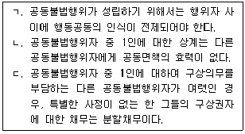
- ㄱ
- ㄷ
- ㄱ, ㄴ
- ㄴ, ㄷ
- ㄱ, ㄴ, ㄷ
(정답률: 알수없음)
2과목: 회계원리
41. 자본을 증가시키는 거래는?
- 고객에게 용역을 제공하고 수익을 인식하였다.
- 주식배당을 결의하였다.
- 유통 중인 자기회사의 주식을 취득하였다.
- 소모품을 외상으로 구입하였다.
- 건물을 장부금액보다 낮은 금액으로 처분하였다.
(정답률: 알수없음)
42. 시산표의 차변금액이 대변금액보다 크게 나타나는 오류에 해당하는 것은?
- 건물 취득에 대한 회계처리가 누락되었다.
- 차입금 상환에 대해 분개를 한 후, 차입금계정에는 전기를 하였으나 현금계정에는 전기를 누락하였다.
- 현금을 대여하고 차변에는 현금으로 대변에는 대여금으로 동일한 금액을 기록하였다.
- 미수금 회수에 대해 분개를 한 후, 미수금계정에는 전기를 하였으나 현금계정에는 전기를 누락하였다.
- 토지 처분에 대한 회계처리를 중복해서 기록하였다.
(정답률: 알수없음)
43. 유용헌 재무정보의 질적특성에 관한 설명으로 옳지 않은 것은?
- 근본적 질적특성은 목적적합성과 표현충실성이다.
- 완벽한 표현충실성을 위해서는 서술이 완전하고, 중립적이며, 오류가 없어야 할 것이다.
- 정보의 유용성을 보강시크는 질적특성에는 비교가능성, 검증가능성, 중요성 및 이해가능성이 있다.
- 일관성은 비교가능성과 관련은 되어 있지만 동일하지는 않다.
- 목적적합한 재무정보는 이용자들의 의사결정에 차이가 나도록 할 수 있다.
(정답률: 알수없음)
44. 20×1년 초에 설립한 (주)한국의 20×1년 말 수정전시산표상 소모품계정은 \50,000이었다. 기말실사 결과 미사용소모품이 \20,000일 때, 소모품에 대한 수정분개의 영향으로 옳은 것은?.
- 비용이 \30,000 증가한다.
- 자본이 \30,000 증가한다.
- 이익이 \20,000 감소한다.
- 자산이 \30,000 증가한다.
- 부채가 \20,000 감소한다.
(정답률: 알수없음)
45. (주)한국이 20×1년 초 자산과 부채는 각각 \500,000과 \300,000이었다. (주)한국의 20×1년도 총포괄이익이 \300,000이라면, 20×1년 말 재무상태표의 자본은?
- \100,000
- \200,000
- \300,000
- \400,000
- \500,000
(정답률: 알수없음)
46. (주)한국은 20×1년 7월 1일 특허권을 \960,000(내용연수 4년, 잔존가치 \0)에 취득하여 사용하고 있다. 특허권의 경제적 효익이 소비될 것으로 예상되는 형태를 신뢰성 있게 결정할 수 없을 경우, 20×1년도에 특허권에 대한 상각비로 인식할 금액은? (단, 특허권은 월할상각한다.)
- \0
- \120,000
- \125,000
- \240,000
- \250,000
(정답률: 알수없음)
47. 유입가치를 반영하는 측정기준을 모두 고른 것은?
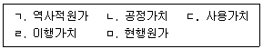
- ㄱ, ㄷ
- ㄱ, ㅁ
- ㄴ, ㄷ
- ㄱ, ㄷ, ㄹ
- ㄴ, ㄹ, ㅁ
(정답률: 알수없음)
48. 재무제표에 관한 설명으로 옳지 않은 것은?
- 각각의 재무제표는 전체 재무제표에서 동등한 비중으로 표시한다.
- 경영진은 재무제표를 작성할 때 계속기업으로서 존속가능성을 평가해야 한다.
- 기업은 현금흐름 정보를 제외하고는 발생기준 회계를 사용하여 재무제표를 작성한다.
- 부적절한 회계정책에 대하여 공시나 주석 또는 보충 자료를 통해 설명화된 정당화될 수 있다.
- 재무제표의 목적은 광범위한 정보이용자의 경제적 의사결정에 유용한 기업의 재무제표, 재무성과와 재무상태변동에 관한 정보를 제공하는 것이다.
(정답률: 알수없음)
49. 재무상태표에 나타나지 않는 계정은?
- 자본금
- 선급보험료
- 손실충당금
- 이익준비금
- 임차료
(정답률: 알수없음)
50. 재무제표 구조와 내용에 관한 설명으로 옳지 않은 것은?
- 수익과 비용 항목이 중요한 경우 성격과 금액을 별도로 공시한다.
- 유동성 순서에 따른 표시방법을 적용할 경우 모든 자산과 부채는 유동성 순서에 따라 표시한다.
- 정상적인 활동과 명백하게 구분되는 수익이나 비용은 당기손익과 기타포괄손익을 표시하는 보고서에 특별손의 항목으로 표시한다.
- 중요한 정보가 누락되지 않는 경우 재무제표의 표시통화를 천 단위나 백만 단위로 표시할 수 있으며 금액 단위를 공시해야 한다.
- 비용의 성격별 또는 기능별 분류방법 중에서 신뢰성 있고 목적적합한 정보를 제공할 수 있는 방법을 적용하여 당기손익으로 인식한 비용의 분석내용을 표시한다.
(정답률: 알수없음)
51. 금융자산에 해당하지 않는 것은?
- 현금
- 대여금
- 투자사채
- 선급비용
- 매출채권
(정답률: 알수없음)
52. (주)한국의 20×1년 말 현재 장부상 당좌예금계정잔액은 \22,500으로 은행측 예금잔액증명서상 금액과 일치하지 않는 것으로 나타났다. 이들 잔액이 일치하지 않는 원인이 다음과 같을 때, 차이 조정 전 은행측 예금잔액증명서상 금액은?
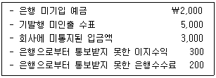
- \22,500
- \23,600
- \25,600
- \28,600
- \30,600
(정답률: 알수없음)
53. (주)한국은 액면금액이 \1,000,000인 사채를 발행하여 매년 말 이자를 지급하고 상각후원가로 측정하고 있다. 사채와 관련된 자료가 다음과 같을 때 표시이자율은?
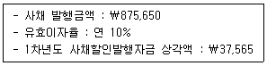
- 4%
- 5%
- 6%
- 7%
- 8%
(정답률: 알수없음)
54. (주)한국의 20×1년 초 매출채권에 대한 손실충당금 \5,000이다. 매출채권과 관련된 자료가 다음과 같을 때, 20×1년도에 인식할 손상차손은?
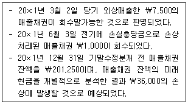
- \30,500
- \31,000
- \35,000
- \36,500
- \37,500
(정답률: 알수없음)
55. (주)한국은 12월 1일 상품매입 대금 \30,000에 대해 당좌수표를 발행하여 지급하였다. 당좌수표 발행 당시 당좌예금 잔액은 \18,000이었고, 동 당좌계좌의 당좌차월 한도액은 \20,000이었다. 12월 20일 거래처로부터 매출채퀀 \20,000이 당좌예금으로 입금되었을 때 회계처리로 옳은 것은?
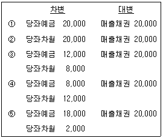
- ①
- ②
- ③
- ④
- ⑤
(정답률: 알수없음)
56. 유형자산의 회계처리에 관한 설명으로 옳은 것은?
- 기업이 판매를 위해 1년 이상 보유하며, 물리적 실체가 있는 것은 유형자산으로 분류된다.
- 유형자산과 관련된 산출물에 대한 수요가 형성되는 과정에서 발생하는 초기 가동손실은 취득원가에 포함한다.
- 유형자산의 제거로 인하여 발생하는 손익은 총매각금액과 장부금액의 차이로 결정한다.
- 기업은 유형자산 전체에 대해 원가모형이나 재평가모형 중 하나를 회계정책으로 선택하여 동일하게 적용한다.
- 유형자산의 감각상각방법과 잔존가치, 그리고 내용연수는 적어도 매 회계연도 말에 재검토한다.
(정답률: 알수없음)
57. (주)한국의 20×1년 말 재무상태표에 표시된 현금및현금성자산은 \4,000이었다. 다음 자료를 이용할 경우 당좌예금은?
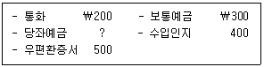
- \2,600
- \2,800
- \3,000
- \3,100
- \3,500
(정답률: 알수없음)
58. 20×1년 7월 초 (주)한국은 토지와 건물을 \2,400,000에 일괄 취특하였다. 취득 당시 토지의 공정가치는 \2,160,000이고, 건물의 공정가치는 \720,000이었으며, (주)한국은 건물을 본사 사옥으로 사용하기로 하였다. 건물에 대한 자료가 다음과 같을 때, 20×1년도에 인식할 감가상각비는? (단, 건물에 대해 원가모형을 적용하며, 월할상각한다.)
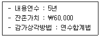
- \90,000
- \110,000
- \120,000
- \180,000
- \220,000
(정답률: 알수없음)
59. (주)한국은 20×1년 초에 상환의무가 없는 정부보조금 \100,000을 수령하여 기계장치를 \200,000에 취득하였으며, 기계장치에 대한 자료는 다음과 같다.
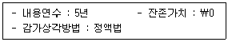
정부보조금을 자산의 장부금액에서 차감하는 방법으로 회계처리 할 때, 20×1년 말 재무상태표에 표시될 기계장치의 장부금액은?
- \60,000
- \80,000
- \100,000
- \160,000
- \200,000
(정답률: 알수없음)
60. 재고자산 회계처리에 관한 설명으로 옳지 않은 것은?
- 재고자산의 취득원가는 매입원가, 전환원가 및 재고자산을 현재의 장소에 현재의 상태로 이르게 하는 데 발생한 기타 원가 모두를 포함한다.
- 재고자산을 순실현가능가치로 감액하는 저가법은 항목별로 적용한다.
- 재고자산을 순실현가능가치로 감액한 평가손실과 모든 감모손실은 감액이나 감모가 발생한 기간에 비용으로 인식한다.
- 도착지인도기준의 미착상품은 판매자의 재고자산으로 분류한다.
- 기초재고수량과 기말재고수량이 같다면, 선입선출법과 가중평균법을 적용한 매출원가는 항상 같게 된다.
(정답률: 알수없음)
61. (주)한국은 20×1년 초 내용연수 종료 후 원상복구 의무가 있는 구축물을 \500,000에 취득하였다. 내용연수 종료시점의 복구비용은 \100,000이 소요될 것으로 추정되며, 복구비용의 현재가치 계산에 적용될 할인율은 연 10% 이다. 구축물에 대한 자료가 다음과 같을 때, 20×1년도 감가상각비와 복구충당부채전입액은? (단, 이자율 10%, 5기간에 대한 단일금액 \1의 현재가치는 0.6209이다.)
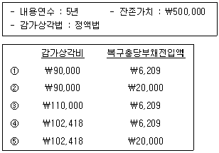
- ①
- ②
- ③
- ④
- ⑤
(정답률: 알수없음)
62. 다음은 계속기록법을 적용하고 있는 (주)한국의 20×1년 재고자산에 대한 거래내역이다. 선입선출법을 적용한 경우의 매출원가는?
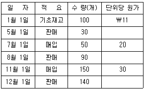
- \1,200
- \2,860
- \5,400
- \5,800
- \6,160
(정답률: 알수없음)
63. (주)한국은 20×1년 7월 1일 홍수로 인해 창고에 있는 상품재고 중 30%가 소실된 것으로 추정하였다. 다음은 소실된 상품재고를 파악하기 위한 20×1년 1월 1일부터 7월 1일까지의 회계자료이다. (주)한국의 원가에 대한 이익률이 25%일 때 소실된 상품재고액은?
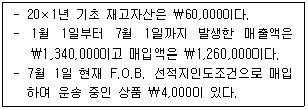
- \73,200
- \74,400
- \93,300
- \94,500
- \104,200
(정답률: 알수없음)
64. 다음 자료를 이용하여 계산한 총매출액은?
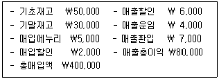
- \493,000
- \500,000
- \506,000
- \510,000
- \513,000
(정답률: 알수없음)
65. (주 )한국은 다음과 같이 액면가 \1,000인 자기주식을 취득하여 매각하였다. 11월 10일 매각 시점의 분개로 옳은 것은?
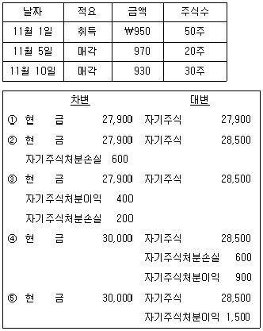
- ①
- ②
- ③
- ④
- ⑤
(정답률: 알수없음)
66. (주)한국은 상품을 \1,000에 취득하면서 현금 \500을 지급하고 나머지는 3개월 이내에 지급하기로 하였다. 이 거래가 발생하기 직전에 유동비율과 당좌비율은 각각 70%와 60%이었다. 상품취득 거래가 유동비율과 당좌비율에 미치는 영향은? (단, 상품거래에 대해 계속기록법을 적용한다.)
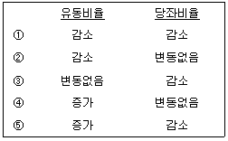
- ①
- ②
- ③
- ④
- ⑤
(정답률: 알수없음)
67. 충당부채의 측정에 관한 설명으로 옳지 않은 것은?
- 충당부채로 인식하는 금액은 현재의무를 보고기간 말에 이행하기 위하여 필요한 지출에 대한 최선의 추정치이어야 한다.
- 충당부채로 인식하여야 하는 금액과 관련된 불확실성은 상황에 따라 판단한다.
- 화폐의 시간가치 영향이 중요한 경우에 충당부채는 의무를 이행하기 위하여 예상되는 지출액의 현재가치로 평가한다.
- 할인율은 부채의 특유한 위험과 화폐의 시간가치에 대한 현행 시장의 평가를 반영한 세전 이율이다.
- 예상되는 자산 처분이익은 충당부채를 객관적으로 측정하기 위하여 고려하여야 한다.
(정답률: 알수없음)
68. (주)한국은 고객과 20×1년부터 3년간 용역제공 계약을 체결하고 용역을 제공하고 있다. 최초 계약 시 총계약금액은 \2,000이었다. 20×2년 중 용역계약원가의 상승으로 총계약금액을 \2,400으로 변경하였다. 용역제공과 관련된 자료가 다음과 같을 때, (주)한국이 인식할 20×2년도 용역계약손익은? (단, 진행률에 의해 계약수익을 인식하며, 진행률은 총추정계약원가 대비 누적발생계약원가로 산정한다.)
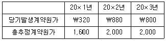
- 손실 \120
- 손실 \800
- 이익 \120
- 이익 \160
- 이익 \240
(정답률: 알수없음)
69. (주)한국의 20×1년 1월 1일 유통보통주식수는 10,000주이다. 20×1년도에 발행된 보통주는 다음과 같다. 20×1년도 (주)한국의 가중평균유통보통주식수는? (단, 가중평균유통보통주식수는 월수를 기준으로 계산한다.)
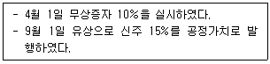
- 11,550주
- 11,600주
- 11,650주
- 11,700주
- 11,750주
(정답률: 알수없음)
70. (주)한국의 20×1년 재무자료가 다음과 같을 때, 20×1년도 매출액은?
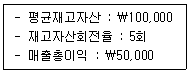
- \400,000
- \450,000
- \500,000
- \550,000
- \800,000
(정답률: 알수없음)
71. 수익인식 5단계를 순서대로 바르게 나열한 것은?
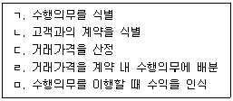
- ㄱ→ㄴ→ㄷ→ㄹ→ㅁ
- ㄱ→ㄷ→ㄴ→ㄹ→ㅁ
- ㄴ→ㄱ→ㄷ→ㄹ→ㅁ
- ㄴ→ㄱ→ㄹ→ㄷ→ㅁ
- ㄷ→ㄱ→ㄴ→ㄹ→ㅁ
(정답률: 알수없음)
72. (주)한국의 20×1년도 포괄손익계산서에 이자비용은 \800(사채할인발행차금 상각액 \80 포함)이다. 20×1년도 이자와 관련된 자료가 다음과 같을 때, 이자지급으로 인한 현금유출액은?
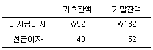
- \652
- \692
- \748
- \852
- \908
(정답률: 알수없음)
73. (주)한국의 20×1년 6월 영업자료에서 추출한 정보이다.
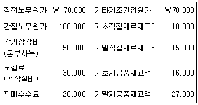
6월 중 당기제품제조원가가 \554,000 이라면 6월의 직접재료 매입액은?
- \181,000
- \190,000
- \195,000
- \200,000
- \230,000
(정답률: 알수없음)
74. (주)한국은 표준원가계산제도를 도입하고 있다. 20×1년 기준조업도 900기계작업시간 하에서 변동제조간접원가 예산은 \153,000이며, 고정제조간접원가 예산은 \180,000이다. 당기의 실제기계작업시간은 840시간, 실제 발생된 변동제조간접원가는 \147,000이었다. 조업도차이가 \10,000(불리)인 것으로 나타났다면, 변동제조간접원가 능률차이(유리)는?
- \1,700
- \2,000
- \18,700
- \32,400
- \47,200
(정답률: 알수없음)
75. (주)한국은 두 개의 보조부문(S1, S2)과 두 개의 제조부문(P1, P2)으로 제품을 생산하고 있다. 각 부문원가와 용역수수관계는 다음과 같다.
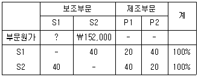
상호배부법으로 보조부문원가를 배부한 결과, S1의 총부문원가는 S2로부터 배부받은 금액 \120,000을 포함하여 \370,000이었다. P2에 배부되는 보조부문원가 합계액은?
- \164,400
- \193,200
- \194,000
- \208,000
- \238,400
(정답률: 알수없음)
76. (주)한국은 세 가지 결합제품(A, B, C)을 생산하고 있으며, 결합원가는 분리점에서의 상대적 판매가치에 의해 배분된다. 관련 자료는 다음과 같다.
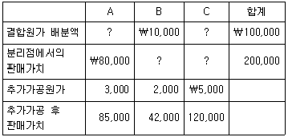
결합제품 C를 추가가공하여 모두 판매하는 경우 결합제품 C의 매출총이익은? (단, 공손과 감손, 재고자산은 없다.)
- \65,000
- \70,000
- \80,000
- \110,000
- \155,000
(정답률: 알수없음)
77. (주)한국은 정상원가계산제도를 채택하고 있으며, 직접노무시간을 기준으로 제조간접원가를 배부하고 있다. (주)한국의 20×1년 제조간접원가는 다음과 같이 추정된다.
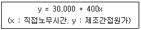
다음 설명 중 옳지 않은 것은? (단, 직접노무시간 1,000시간 까지는 관련범위 내에 있다.)
- 직접노무시간이 200시간으로 예상될 때 제조간접원가는 \110,000으로 추정된다.
- 직접노무시간이 300시간으로 예상될 때 제조간접원가는 예정배부율은 \500 이다.
- 직접노무시간이 400시간일 때 제조간접원가의 변동예산액은 \160,000 이다.
- 직접노무시간당 제조간접원가는 \400 증가하는 것으로 추정된다.
- 직접노무시간이 영(0)일 때 제조간접원가는 \30,000으로 추정된다.
(정답률: 알수없음)
78. (주)한국의 20×1년 제품 생산·판매와 관련된 자료는 다음과 같다.
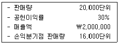
20×2년 판매량이 20×1년 보다 20% 증가한다면 영업이익 증가액은? (단, 다른 조건은 20×1년과 동일하다.)
- \24,000
- \120,000
- \168,650
- \184,000
- \281,250
(정답률: 알수없음)
79. (주)한국은 한 종류의 제품 X를 매월 150,000단위씩 생산·판매하고 있다. 단위당 판매가격과 변동원가는 각각 \75과 \45이며, 월 고정원가는 \2,000,000으로 여유생산능력은 없다. (주)한국은 (주)대한으로부터 매월 제품 Y 10,000단위를 공급해 달라는 의뢰를 받았다. (주)한국은 제품 X의 생산라인을 이용하여 제품 Y를 즉시 생산할 수 있다. 그러나 (주)한국이 (주)대한의 주문을 받아들이기 위해서는 제품 X의 생산·판매량 8,000단위를 포기해야 하고, 제품 Y를 생산·판매하면 단위당 \35의 변동원가가 발생한다. (주)한국이 현재의 이익을 유지하려면 이 주문에 대한 가격을 최소한 얼마로 책정해야 하는가? (단, 재고자산은 없다.)
- \43
- \59
- \63
- \69
- \73
(정답률: 알수없음)
80. (주)한국의 20×1년 종합예산의 일부 자료이다.
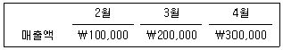
월별 매출은 현금매출 60%와 외상매출 40%로 구성되며, 외상매출은 판매된 다음 달에 40%, 그 다음 달에 나머지가 모두 회수된다. 20×1년 4우러 말 매출채권 잔액은?
- \48,000
- \56,000
- \72,000
- \144,000
- \168,000
(정답률: 알수없음)
3과목: 공동주택시설개론
81. 건축물에 작용하는 하중에 관한 설명으로 옳은 것을 모두 고른 것은?
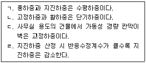
- ㄱ, ㄴ
- ㄱ, ㄹ
- ㄴ, ㄷ
- ㄱ, ㄷ, ㄹ
- ㄴ, ㄷ, ㄹ
(정답률: 알수없음)
82. 건축구조의 시공과정에 따른 분류에 해당하지 않는 것은?
- 습식구조
- 라멘구조
- 조립구조
- 현장구조
- 건식구조
(정답률: 알수없음)
83. ( )에 들어갈 기초 명칭으로 옳은 것은?
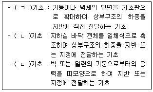
- ㄱ : 독립, ㄴ : 온통, ㄷ : 연속
- ㄱ : 독립, ㄴ : 연속, ㄷ : 온통
- ㄱ : 연속, ㄴ : 직접, ㄷ : 독립
- ㄱ : 직접, ㄴ : 독립, ㄷ : 연속
- ㄱ : 직접, ㄴ : 온통, ㄷ : 연속
(정답률: 알수없음)
84. 흙막이 공사에서 발행하는 현상에 관한 설명으로 옳은 것을 모두 고른 것은?
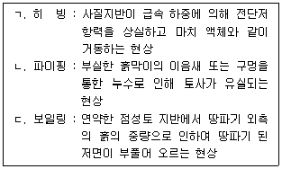
- ㄱ
- ㄴ
- ㄱ, ㄷ
- ㄴ, ㄷ
- ㄱ, ㄴ, ㄷ
(정답률: 알수없음)
85. 콘크리트 줄눈에 관한 설명으로 옳지 않은 것은?
- 신축줄눈은 콘크리트의 수축, 팽창 등에 따른 균열 발생 방지를 위해 설치하는 줄눈이다.
- 조절줄눈은 균열을 일정한 곳에서만 일어나도록 유도하기 위해 균열이 예상되는 위치에 설치하는 줄눈이다.
- 지연줄눈은 일정 부위를 남겨놓고 콘크리트를 타설한 후, 초기 수축 균열을 진행시킨 다음 최종 타설할 때 발생하는 줄눈이다.
- 슬라이등 조인트는 슬래브나 보가 단순지지되어 있을 때, 수평 방향으로 미끄러질 수 있도록 설치하는 줄눈이다.
- 콜드 조인트는 기온이 낮을 때 동결융해 방지를 위해 설치하는 줄눈이다.
(정답률: 알수없음)
86. 철근에 관한 설명으로 옳은 것은?
- 띠철근은 기둥 주근의 좌굴방지의 전단보강 역할을 한다.
- 갈고리(hook)는 집중하중을 분산시키거나 균열을 제어할 목적으로 설치한다.
- 원형철근은 콘크리트와의 부착력을 높이기 위해 표면에 마디와 리브를 가공한 철근이다.
- 스터럽(stirrup)은 보의 인장보강 및 주근 위치고정을 목적으로 배치한다.
- SD400에서 400은 인장강도가 400MPa 이상을 의미한다.
(정답률: 알수없음)
87. 콘크리트의 슬럼프 시험으로 판단할 수 있는 것은?
- 시공연도
- 크리프
- 중성화
- 내구성
- 수밀성
(정답률: 알수없음)
88. 철근콘크리트 공사에 관한 설명으로 옳은 것은?
- 콘크리트 타설 후 양생기간 동안의 일평균 기온이 4℃ 이하인 경우 서중 콘크리트로 시공한다.
- 거푸집이 오므라드는 것을 방지하고, 거푸집 상호간의 간격을 유지하기 위해 간격재(spacer)를 배치한다.
- 보에서의 이어붓기는 스팬 중앙에서 수직으로 한다.
- 보의 철근이음 시 하부주근은 중앙부에서 이음한다.
- 콘크리트의 소요강도는 배합강도보다 충분히 커야한다.
(정답률: 알수없음)
89. 철골구조의 접합에 관한 설명으로 옳은 것을 모두 고른 것은?
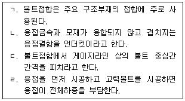
- ㄱ, ㄴ
- ㄱ, ㄹ
- ㄷ, ㄹ
- ㄱ, ㄴ, ㄷ
- ㄴ, ㄷ, ㄹ
(정답률: 알수없음)
90. 시멘트 모르타르 미장공사에 관한 설명으로 옳지 않은 것은?
- 모래의 입도는 바름 두께에 지장이 없는 한 큰 것으로 한다.
- 콘크리트 천장 부위의 초벌바름 두께는 6mm를 표준으로 하고, 전체 바름 두께는 15mm 이하로 한다.
- 초벌바름 후 충분히 건조시켜 균열을 발생시킨 후 고름질을 하고 재벌바름 한다.
- 재료의 부합은 바탕에 가까운 바름층 일수록 빈배합으로 하고, 정벌바름에 가까울수록 부배합으로 한다.
- 바탕면은 적당히 물축이기를 하고, 면을 거칠게 해둔다.
(정답률: 알수없음)
91. 조적공사에 관한 설명으로 옳지 않은 것은?
- 창대벽돌의 위끝은 창대 밑에 15mm 정도 들어가 물리게 한다.
- 창문틀 사이는 모르타르로 빈틈없이 채우고 방수 모르타르, 코킹 등으로 방수처리를 한다.
- 창대벽돌의 윗면은 15° 정도의 경사로 옆세워 쌓는다.
- 인방보는 좌우측 기둥이나 벽체에 50mm 이상 서로 물리도록 설치한다.
- 인방보는 좌우의 벽체가 공간쌓기일 때에는 콘크리트가 그 공간에 떨어지지 않도록 벽돌 또는 철판 등으로 막고 설치한다.
(정답률: 알수없음)
92. 다음에서 설명하는 타일붙임공법은?
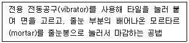
- 밀착공법
- 떠붙임공법
- 접착제공법
- 개량압착붙임공법
- 개량떠붙임공법
(정답률: 알수없음)
93. 외부에서는 열쇠로, 내부에서는 작은 손잡이를 돌려서 열 수 있는 창호철물은?
- 도어체크(door check)
- 크레센트(crescent)
- 패스너(fastener)
- 나이트 래치(night latch)
- 레버토리 힌지(lavatory hinge)
(정답률: 알수없음)
94. 반사유리나 컬러유리의 한쪽 면을 은으로 코팅한 것으로 열의 이동을 최소화시켜 주는 에너지 절약형 유리는?
- 망입유리
- 로이유리
- 스팬드럴유리
- 복층유리
- 프리즘유리
(정답률: 알수없음)
95. 신축성 시트계 방습자재가 아닌 것은?
- 비닐 필름 방습지
- 폴리에틸렌 방습층
- 방습층 테이프
- 아스팔트 필름 방습층
- 교착성이 있는 플라스틱 아스팔트 방습층
(정답률: 알수없음)
96. 도장공사에 관한 설명으로 옳지 않은 것은?
- 녹막이도장의 첫 번째 녹막이칠은 공장에서 조립 후에 도장함을 원칙으로 한다.
- 뿜칠 공사에서 건(spray gun)은 도장면에서 300mm 정도 거리를 두어서 시공하고, 도장면과 평행 이동하여 뿜칠한다.
- 롤러칠은 평활하고 큰 면을 칠할 때 사용한다.
- 뿜칠은 압력이 낮으면 거칠고, 높으면 칠의 유실이 많다.
- 솔질은 일반적으로 위에서 아래로, 왼쪽에서 오른쪽으로 칠한다.
(정답률: 알수없음)
97. 경량철골 천장틀이나 배관 등을 매달기 위하여 콘크리트에 미리 묻어 넣는 철물은?
- 익스팬션 볼트(expansion bolt)
- 코펜하겐 리브(copenhagen rib)
- 드라이브 핀(drive pin)
- 멀리온(mullion)
- 인서트(insert)
(정답률: 알수없음)
98. 지붕의 형태와 명칭의 연결이 옳지 않은 것은?
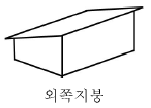
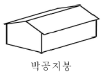
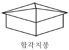
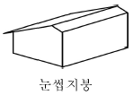
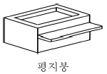
(정답률: 알수없음)
99. 소요수량 산출 시 할증률이 가장 작은 재료는?
- 도료
- 이형철근
- 유리
- 일반용 합판
- 석고보드
(정답률: 알수없음)
100. 면적 100m2인 벽체를 콘크리트(시멘트) 벽돌(190×90×57mm)을 이용하여 0.5B 두께로 쌓을 때 콘크리트(시멘트) 벽돌의 소요량은? (단, 줄눈은 10mm로 한다.)
- 6,695매
- 6,825매
- 7,500매
- 7,725매
- 7,875매
(정답률: 알수없음)
101. 전기설비기술기준의 판단기준상 전기설비에 관한 내용으로 옳지 않은 것은?
- 저압 옥내간선은 손상을 받을 우려가 없는 곳에 시설한다.
- 주택용 분전반은 노출된 장소(신발장, 옷장 등의 은폐된 장소는 제외한다)에 시설한다.
- 전력용 반도체소자의 스위칭 작용을 이용하여 교류전력을 직류전력으로 변환하는 장치를 “인버터”라고 한다.
- “분산형전원”이란 중앙급전 전원과 구분되는 것으로서 전력소비지역 부근에 분산하여 배치 가능한 전원(상용전원의 정전시에만 사용하는 비상용 예비전원을 제외한다)을 말하며, 신·재생에너지 발전설비, 전기저장장치 등을 포함한다.
- “단순 병렬운전”이란 자가용 발전설비를 배전계통에 연계하여 운전하되, 생산한 전력의 전부를 자체적으로 소비하기 위한 것으로서 생산한 전력이 연계계통으로 유입되지 않는 병렬 형태를 말한다.
(정답률: 알수없음)
102. 급탕설비에 관한 내용으로 옳지 않은 것은?
- 간접가열식이 직접가열식보다 열효율이 좋다.
- 팽창관의 도중에는 밸브를 설치해서는 안 된다.
- 일반적으로 급탕관의 관경을 환탕관(반탕관)의 관경보다 크게 한다.
- 자동온도조절기(Thermostat)는 저장탱크에서 온수온도를 적절히 유지하기 위해 사용하는 것이다.
- 급탕배관을 복관식(2관식)으로 하는 이유는 수전을 열었을 때, 바로 온수가 나오게 하기 위해서이다.
(정답률: 알수없음)
103. 수도법령상 절수설비와 절수기기에 관한 내용으로 옳은 것을 모두 고른 것은?
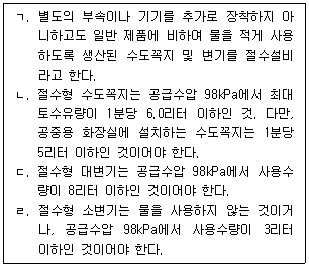
- ㄷ
- ㄹ
- ㄱ, ㄴ
- ㄱ, ㄷ
- ㄴ, ㄷ, ㄹ
(정답률: 알수없음)
104. 위생기구의 세정(플러시)밸브에 관한 설명으로 옳지 않은 것은?
- 플러시밸브의 2차측(하류측)에는 버큠 브레이커(vacuum breaker)를 설치한다.
- 버큠 브레이커(vacuum breaker)의 역할은 이미 사용한 물의 자기사이펀 작용에 의해 상수계통(급수관)으로 역류하는 것을 방지하기 위한 기구이다.
- 플러스밸브에는 핸들식, 전자식, 절수형 등이 있다.
- 소음이 크고, 단시간에 다량의 물을 필요로 하는 문제점 등으로 인해 일반 가정용으로 거의 사용하지 않는다.
- 급수관의 관경은 25mm 이상 필요하다.
(정답률: 알수없음)
1⑤. 지능형 홈네트워크 설비 설치 및 기술기준에 관한 내용으로 옳지 않은 것은?
- 월패드는 홈네티워크장비에 포함된다.
- 원격제어가 가능한 조명제어기를 세대 안에 1구 이상 설치하여야 한다.
- 홈네트워크 기기의 예비부품은 5% 이상 5년간 확보할 것을 권장한다.
- 무인택배함의 설치수량은 소형주택의 경우 세대수의 약 10~15% 정도 설치할 것을 권장한다.
- 집중구내통신실은 TPS라고 하며, 통신용 파이프 샤프트 및 통신단자함을 설치하기 위한 공간을 말한다.
(정답률: 알수없음)
106. 하수도법령상 용어의 내용으로 옳지 않은 것은?
- “하수”라 함은 사람의 생활이나 경제활동으로 인하여 액체성 또는 고체성의 물질이 섞이어 오염된 물(이하 “오수”라 한다)을 말하며, 건물·도로 그 밖의 시설물의 부지로부터 하수도로 유입되는 빗물·지하수는 제외한다.
- “하수도”라 함은 하수와 분뇨를 유출 또는 처리하기 위하여 설치되는 하수관로·공공하수처리시설 등 공작물·시설의 총체를 말한다.
- “분류식하수관로”라 함은 오수와 하수도로 유입되는 빗물·지하수가 각각 구분되어 흐르도록 하기 위한 하수관로를 말한다.
- “공공하수도”라 함은 지방자치단체가 설치 또는 관리하는 하수도를 말한다. 다만, 개인하수도는 제외한다.
- “배수설비”라 함은 건물·시설 등에서 발생하는 하수를 공공하수도에 유입시키기 위하여 설치하는 배수관과 그 밖의 배수시설을 말한다.
(정답률: 알수없음)
107. 최근 공동주택에 전기자동차 충전시설의 설치가 확대되고 있다. 다음은 “환경친화적 자동차의 개발 및 보급 촉진에 관한 법령”의 일부분이다. ( )에 들어갈 내용으로 옳은 것은?
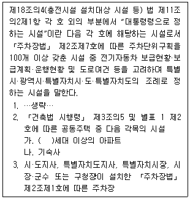
- 100
- 200
- 300
- 400
- 500
(정답률: 알수없음)
108. 소화기구 및 자동소화장치의 화재안전기준상 용어의 정의로 옳지 않은 것은?
- “대형소화기”란 화재 시 사람이 운반할 수 있도록 운반대와 바퀴가 설치되어 있고 능력단위가 A급 10단위 이상, B급 20단위 이상인 소화기를 말한다.
- “소형소화기”란 능력단위가 1단위 이상이고 대형소화기의 능력단위 미만인 소화기를 말한다.
- “주거용 주방자동소화장치”란 주거용 주방에 설치된 열발생 조리기구의 사용으로 인한 화재 발생 시 열원(전기 또는 가스)을 자동으로 차단하여 소화약제를 방출하는 소화장치를 말한다.
- “유류화재(B급 화재)”란 인화성 액체, 가연성 액체, 석유, 그리스, 타르, 오일, 유성도료, 솔벤트, 래커, 알코올 및 인화성 가스와 같은 우류가 타고 나서 재가 남지 않는 화재를 말한다.
- “주방화재(C급 화재)”란 주방에서 동식물유를 취급하는 조리기구에서 일어나는 화재를 말한다. 주방화재에 대한 소화기의 적응 화재별 표시는 'C'로 표시한다.
(정답률: 알수없음)
109. 기존 열관류저항이 3.0m2·K/W인 벽체에 열전도율 0.04W/m·K인 단열재 40mm를 보강하였다. 이 때 단열이 보강된 벽체의 열관류율(W/m2·K)은 약 얼마인가?
- 0.10
- 0.15
- 0.20
- 0.25
- 0.30
(정답률: 알수없음)
110. LPG와 LNG에 관한 설명으로 옳지 않은 것은?
- 일반적으로 LNG의 발열량은 LPG의 발열량보다 크다.
- LNG의 주성분은 메탄이다.
- LNG는 무공해, 무독성 가스이다.
- LNG는 천연가스를 –162℃까지 냉각하여 액화시킨 것이다.
- LNG는 냉난방, 급탕, 취사 등 가정용으로도 사용된다.
(정답률: 알수없음)
111. 하수도법령상 개인하수처리시설의 관리기준에 관한 내용의 일부분이다. ( )에 들어갈 내용으로 옳은 것은?
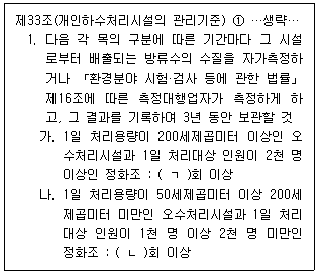
- ㄱ : 6개월마다, ㄴ : 2년마다 1
- ㄱ : 6개월마다, ㄴ : 연 1
- ㄱ : 연 1, ㄴ : 연 1
- ㄱ : 연 1, ㄴ : 2년마다 1
- ㄱ : 연 1, ㄴ : 3년마다 1
(정답률: 알수없음)
112. 유도등 및 유도표지의 화재안전기준상 통로유도등 설치기준의 일부분이다. ( )에 들어갈 내용으로 옳은 것은?
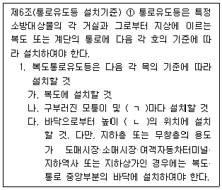
- ㄱ : 직선거리 10m, ㄴ : 1.5m 이상
- ㄱ : 보행거리 20m, ㄴ : 1m 이하
- ㄱ : 보행거리 25m, ㄴ : 1.5m 이상
- ㄱ : 직선거리 30m, ㄴ : 1m 이상
- ㄱ : 보행거리 30m, ㄴ : 2m 이하
(정답률: 알수없음)
113. 다음 중 배수트랩에 해당하는 것을 모두 고른 것은?
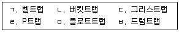
- ㄱ, ㄴ
- ㄱ, ㄷ, ㅂ
- ㄷ, ㄹ, ㅂ
- ㄱ, ㄷ, ㄹ, ㅂ
- ㄴ, ㄷ, ㄹ, ㅁ
(정답률: 알수없음)
114. 바닥 복사난방에 관한 설명으로 옳지 않은 것은?
- 실내에 방열기를 설치하지 않으므로 바닥면의 이용도가 높다.
- 증기난방과 비교하여 실내층고와 관계없이 상하 온도차가 항상 크다.
- 방을 개방한 상태에서도 난방 효과가 있다.
- 매설배관의 이상발생 시 발견 및 수리가 어렵다.
- 열손실을 막기 위해 방열면의 단열층이 필요하다.
(정답률: 알수없음)
115. 엘리베이터의 안전장치에 관한 설명으로 옳은 것은?
- 완충기는 스프링 또는 유체 등을 이용하여 카, 균형추 또는 평형추의 충격을 흡수하기 위한 장치이다.
- 파인러 리미트는 스위치는 전자식으로 운전중에는 항상 개방되어 있고, 정지시에 전원이 차단됨과 동시에 작동하는 장치이다.
- 과부함감지장치는 정전시나 고장 등으로 승객이 갇혔을 때 외부와의 연락을 위한 장치이다.
- 과속조절기는 승강기가 최상층 이상 및 최하층 이하로 운행되지 않도록 엘리베이터의 초과운행을 방지하여 주는 장치이다.
- 전자·기계 브레이크는 승강기 문에 승객 또는 물건이 끼었을 때 자동으로 다시 열리게 되어있는 장치이다.
(정답률: 알수없음)
116. 급수설비의 양수펌프에 관한 설명으로 옳은 것은?
- 용적형 펌프에는 벌(볼)류트펌프와 터빈펌프가 있다.
- 동일 특성을 갖는 펌프를 직렬로 연결하면 유량은 2배로 증가한다.
- 펌프의 회전수를 변화시켜 양수량을 조절하는 것을 변속운전방식이라 한다.
- 펌프의 양수량은 펌프의 회전수에 반비례한다.
- 공동현상을 방지하기 위해 흡입양정을 높인다.
(정답률: 알수없음)
117. 500인이 거주하는 아파트에서 급수온도는 5℃, 급탕온도는 65℃일 때, 급탕가열장치의 용량(kW)은 약 얼마인가? (단, 1인 1일당 급탕량은 100L/d·인, 물의 비열은 4.2 kJ/kg·K, 1일 사용량에 대한 가열능력 비율은 1/7, 급탕가열장치 효율은 100%, 이 외의 조건은 고려하지 않는다.)
- 50
- 250
- 500
- 1,000
- 3,000
(정답률: 알수없음)
118. 난방방식에 관한 설명으로 옳지 않은 것은?
- 대류(온풍)난방은 가습장치를 설치하여 습도조절을 할 수 있다.
- 온수난방은 증기난방에 비해 예열시간이 길어서 난방감을 느끼는 데 시간이 걸려 간헐운전에 적합하지 않다.
- 온수난방에서 방열기의 유량을 균등하게 분배하기 위하여 역환수방식을 사용한다.
- 증기난방은 응축수의 환수관 내에서 부식이 발생하기 쉽다.
- 증기난방은 온수난방보다 열매체의 온도가 높아 열매량 차이에 따른 열량조절이 쉬우므로, 부하변동에 대한 대응이 쉽다.
(정답률: 알수없음)
119. 배수 및 통기설비에 관한 설명으로 옳지 않은 것은?
- 결합통기관은 배수수직관 내의 압력변화를 완화하기 위하여 배수수직관과 통기수직관을 연결하는 통기관이다.
- 통기수평지관은 기구의 물넘침선보다 150mm 이상 높은 위치에서 수직통기관에 연결한다.
- 신정통기관은 배수수직관의 상부를 그대로 연장하여 대기에 개방하는 것으로, 배수수직관의 관경보다 작게 해서는 안 된다.
- 배수수평관이 긴 경우, 배수관의 관 지름이 100mm 이하인 경우에는 20m 이내, 100mm를 넘는 경우는 매 35m 마다 청소구를 설치한다.
- 특수통기방식의 일종인 소벤트방식, 섹스티아방식은 신정통기방식을 변형시킨 것이다.
(정답률: 알수없음)
120. 다음 중 펌프의 실양정 산정 시 필요한 요소에 해당하는 것을 모두 고른 것은?
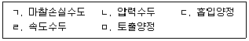
- ㄱ,ㄷ
- ㄷ, ㅁ
- ㄱ, ㄴ, ㄹ
- ㄴ, ㄷ, ㄹ, ㅁ
- ㄱ, ㄴ, ㄷ, ㄹ, ㅁ
(정답률: 알수없음)
미등기 무허가건물의 양수인에게는 소유권에 준하는 관습상의 물권이 인정되는 이유는, 미등기 무허가건물은 법적으로는 존재하지 않는 것으로 보이지만, 실제로는 사용되고 있는 것이 일반적인 관습이기 때문이다. 이러한 관습은 법적으로 인정되어 미등기 무허가건물의 양수인에게는 소유권에 준하는 물권이 인정된다.